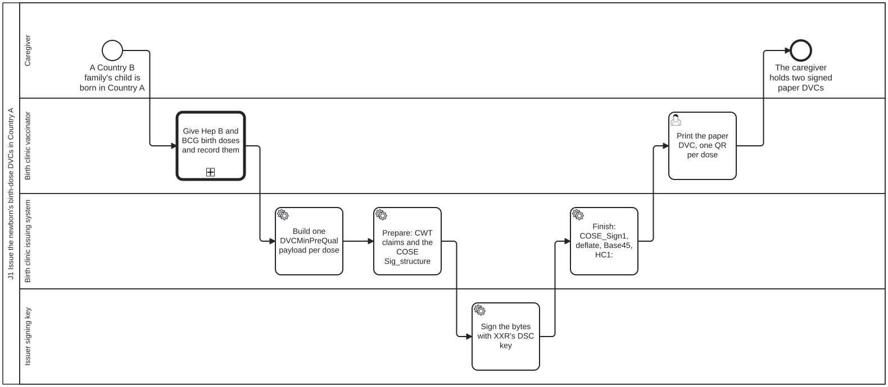

Carte du parcours
Lisez horizontalement pour suivre une personne. Lisez verticalement pour voir tout le monde à un moment donné. Cliquez sur une colonne pour l’examiner.
Administre les doses à la naissance d’hépatite B et de BCG et imprime deux cartes de vaccination QR signées.
« Il n’est pas de Taifafeki, mais il a quand même besoin d’un dossier qu’il peut rapporter chez lui. »
Scanne le code QR, saisit le code d’accès que Bounmy lui donne, et voit les six doses.
« Né ici, vacciné là-bas — et je peux tout voir. »
Naît, et reçoit ses doses à la naissance d’hépatite B et de BCG dans les heures qui suivent.
« Deux petites piqûres, et un dossier qui le suivra. »
Est ajouté à son ménage : le système de santé d’Onesa sait désormais qu’il existe.
« Trois semaines, et maintenant il compte. »
De retour à Kesaro avec de la fièvre, il est examiné par le médecin qui l’a vacciné à la naissance.
« Une pièce inconnue, mais personne n’a à deviner ce qu’il a reçu. »
Accouche loin de chez elle et reçoit deux cartes papier à sa sortie.
« Est-ce que quelqu’un, chez nous, croira ces papiers ? »
Parle à Vilay de la naissance à Taifafeki et montre les cartes.
« J’espère que nous n’aurons pas d’ennuis pour avoir accouché à l’étranger. »
Reçoit une orientation vers le centre de santé de district.
« Encore un déplacement — mais au moins, ils sont maintenant au courant de ses vaccins. »
Amène Somsak à la consultation prévue par l’orientation.
« Ils croient les papiers de Taifafeki ! »
Repart avec une date pour les prochains vaccins de Somsak.
« Maintenant, je sais exactement quand revenir. »
Compte sur le téléphone de Bounmy pour ses propres dossiers et ceux du bébé.
« C’est sur son téléphone à lui. Et si je voyage sans lui ? »
Regarde le médecin découvrir tout ce qui s’est passé depuis la naissance.
« Tout l’a suivi. »
Scanne les deux cartes QR et lit les doses, sans vérifier leurs signatures.
« Je peux le lire, mais ici, je ne peux pas prouver qu’il est authentique. »
Ajoute Somsak au ménage Sengmany, enregistre les deux doses comme non vérifiées et programme une orientation vers la clinique.
« Pas de signal depuis des semaines — mais je dois l’enregistrer aujourd’hui. »
Confirme les informations du ménage en tant que chef de ménage.
« Bien, il figure maintenant dans le dossier de notre famille. »
Ouvre le portefeuille familial : les profils de lui-même, de Khamla et de Somsak.
« Un téléphone, trois personnes — je peux gérer pour nous tous. »
Crée pour Somsak un lien QR protégé par code d’accès, valable 14 jours.
« C’est moi qui décide qui le voit, et pour combien de temps. »
Montre le code QR sur son téléphone et prononce le code d’accès à voix haute.
« Pas de dossier de papiers cette fois. »
Scanne la carte ; la tablette confirme la signature de Taifafeki et marque les doses comme vérifiées.
« Une coche verte — je peux faire confiance à un hôpital dont je n’ai jamais entendu parler. »
Confirms the Taifafeki product equals the Onesan birth dose; gives the overdue 6-week vaccines.
« Nom différent, même vaccin — c’est une décision que je peux prendre. »
2 cartes papier signées (Hep B, BCG)
Conservé dans : le sac de KhamlaDoses lues sur les 2 cartes ; rien n’est encore enregistré
Conservé dans : cartes papier + téléphone du CHWBébé enregistré ; 2 doses enregistrées comme « déclarées par la famille »
Conservé dans : téléphone du CHW (en attente de synchronisation)Doses vérifiées ; Taifafeki enregistrée comme source
Conservé dans : dossiers de la clinique de districtLes doses à la naissance comptent ; prochain rendez-vous fixé
Conservé dans : dossiers de santé nationaux d’OnesaRésumé à 12 mois : 2 doses de Taifafeki + 4 doses d’Onesa
Conservé dans : dossiers nationaux d’Onesa + portefeuille familialLien partageable créé ; les données restent à Onesa
Conservé dans : dossiers nationaux d’Onesa (le QR n’est qu’un pointeur)Consulté à Taifafeki, jamais copié ; accès journalisé à Onesa
Conservé dans : dossiers nationaux d’OnesaLe bébé n’a pas de numéro d’identité de Taifafeki, de sorte que ses dossiers resteraient normalement enfermés dans le système de l’hôpital de Taifafeki.
Sans vérification, une carte falsifiée ou mal saisie pourrait discrètement devenir un dossier officiel.
Les bébés nés à l’étranger sont invisibles pour le système de santé du pays de résidence jusqu’à ce que l’enregistrement à l’état civil soit effectué — parfois des mois plus tard.
Les cliniciens se méfient des documents papier étrangers et revaccinent, ou leur font aveuglément confiance.
Les pays nomment et conditionnent les vaccins différemment, si bien que des doses sont omises ou répétées.
De nombreuses familles partagent un seul smartphone ; les conceptions « une application par personne » les excluent.
L’envoi de photos ou de PDF des dossiers expose des données et ne peut pas être vérifié par le destinataire.
Sans l’historique, le médecin répéterait les vaccins ou devrait deviner.
Une carte QR signée numériquement voyage avec la famille — aucun numéro d’identification ni consultation de base de données n’est nécessaire.
Le téléphone lit la carte hors ligne et distingue clairement « ce que la famille nous a dit » de « ce que nous avons vérifié ».
Un formulaire hors ligne rattache immédiatement le bébé à son ménage ; il se synchronise dès que le téléphone capte un signal.
La clé de signature de Taifafeki figure sur la liste de confiance partagée de l’OMS, de sorte que toute clinique peut la vérifier localement.
Le code d’origine de Taifafeki est conservé et le code d’Onesa est ajouté à côté ; le moteur de calendrier calcule ce qui est dû.
Un portefeuille du ménage sur un seul téléphone, avec un résumé de santé distinct pour chaque personne.
Un lien de santé vérifiable : le code QR ne contient qu’un pointeur verrouillé ; les données restent dans le pays de résidence jusqu’à ce que le code d’accès soit donné.
Le dossier est récupéré en direct depuis Onesa, consulté sans être copié, et un journal d’accès est envoyé dans le pays de résidence.
Hôpital de Taifafeki → Famille (papier)
Code QR impriméHors ligneCarte papier → téléphone du CHW
Scan par caméraHors ligneKhamla (oralement) + les cartes décodées → téléphone du CHW → serveur national (à la synchronisation)
Formulaire hors ligne (FHIR Questionnaire), puis synchronisation via l’Info GatewayHors ligneCarte papier → tablette de la clinique
Scan par caméra + contrôle local de la liste de confianceHors ligneTablette de la clinique → serveur FHIR national d’Onesa
API FHIR via l’Info GatewayEn ligneServeur FHIR national d’Onesa → Portefeuille familial
API FHIR (HTTPS) via l’Info GatewayEn lignePortefeuille familial → serveur national d’Onesa
HTTPSEn ligneServeur national d’Onesa → visualiseur de la clinique de Taifafeki
HTTPS (récupération VHL) par-delà la frontièreEn ligneDeux cartes papier rentrent à la maison avec Khamla
Les doses, lues mais non vérifiées, sont intégrées à l’enregistrement
Orientation vers le centre de santé de district
Doses vérifiées, prêtes à être planifiées
Somsak poursuit le calendrier d’Onesa pendant un an
Le résumé de Somsak est prêt à être partagé
Un code QR sur le téléphone de papa + un code d’accès qu’il peut prononcer à voix haute
Parcours terminé — retour au point de départ à Taifafeki

J1 Émettre les DVC de la dose à la naissance du nouveau-né dans le Pays AScénario utilisateur dans le guide d’implémentationBPMN J2 Repérer et orienter un nourrisson non enregistré dans le Pays BScénario utilisateur dans le guide d’implémentationBPMNJ2 Repérer et orienter un nourrisson non enregistré dans le Pays BScénario utilisateur dans le guide d’implémentationBPMN
J2 Repérer et orienter un nourrisson non enregistré dans le Pays BScénario utilisateur dans le guide d’implémentationBPMNJ2 Repérer et orienter un nourrisson non enregistré dans le Pays BScénario utilisateur dans le guide d’implémentationBPMN J3 Vérifier, importer et planifier au centre de santé de rattachementScénario utilisateur dans le guide d’implémentationBPMNJ3 Vérifier, importer et planifier au centre de santé de rattachementScénario utilisateur dans le guide d’implémentationBPMN
J3 Vérifier, importer et planifier au centre de santé de rattachementScénario utilisateur dans le guide d’implémentationBPMNJ3 Vérifier, importer et planifier au centre de santé de rattachementScénario utilisateur dans le guide d’implémentationBPMN J4.0 Émettre les dossiers de la famille sur un seul téléphone sous forme de VHLScénario utilisateur dans le guide d’implémentationBPMN
J4.0 Émettre les dossiers de la famille sur un seul téléphone sous forme de VHLScénario utilisateur dans le guide d’implémentationBPMN J4.1 Lire les dossiers d'un membre de la famille au point de soins à l'étrangerScénario utilisateur dans le guide d’implémentationBPMN
J4.1 Lire les dossiers d'un membre de la famille au point de soins à l'étrangerScénario utilisateur dans le guide d’implémentationBPMNUn bébé d’Onesa naît à Taifafeki
Somsak reçoit ses vaccins à la naissance dans un hôpital de Taifafeki — et la seule chose qui franchira la frontière avec lui est une paire de cartes papier.
Une agente de santé trouve le bébé — et lit ses cartes
Lors d’une visite de routine au village, Vilay trouve un nouveau-né dont le système d’Onesa ignore l’existence. Elle peut lire les vaccins sur ses cartes, mais ne peut pas prouver qu’ils sont authentiques.
Enregistré au domicile, et orienté
Sans signal, Vilay ajoute Somsak à son ménage, enregistre ses doses comme « déclarées » et oriente la famille vers la clinique.
La clinique confirme que les cartes sont authentiques
L’infirmière Chanthason scanne la carte, et sa tablette vérifie la signature numérique de Taifafeki par rapport à la liste de confiance de l’OMS — sans contacter Taifafeki.
Les vaccins de Taifafeki sont intégrés au calendrier d’Onesa
Le produit Hep B de Taifafeki ne correspond à rien dans le calendrier d’Onesa. Chanthason prend la décision clinique, et le système détermine ce qui est dû ensuite.
Un seul téléphone contient les dossiers de toute la famille
Un an plus tard, la famille prévoit un voyage à Taifafeki. Le téléphone de Bounmy contient les dossiers de tous les trois, dont les six doses vérifiées de Somsak.
Papa crée un lien à partager à la clinique
Avant le voyage, Bounmy crée un lien QR vers le dossier de Somsak, verrouillé par un code d’accès à 4 chiffres et valable 14 jours (les paramètres de la démonstration : chaque pays fixerait les siens). Le dossier lui-même reste à Onesa.
Un médecin de Taifafeki voit l’historique complet
De retour là où tout a commencé, le Dr Anan scanne le lien, entend le code d’accès et voit toute la première année de Somsak — et Onesa est informée de qui a consulté le dossier.